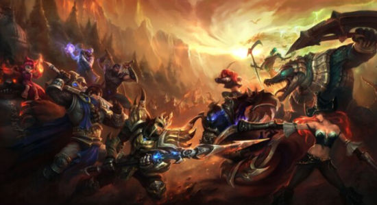

召唤师和保卫者
召唤师是符文之地现在对魔法大师们的称呼，他们不仅可以施展法术、制造符文，还可以召唤其他生物为其服务。这是一种破坏行为。有些最强大的召唤师甚至可以召唤来自异世界的生物服侍自己。这种行为的带来的破坏是无法计算的，可以肯定的是，这些召唤异世界生物的行为直接加剧了符文之地的不稳定。 召唤师召唤出的生物必须拥有坚定的意志和勇气，才能在召唤的过程中存活下来。现在，人们通常称这些召唤生物为保卫者。不过保卫者英雄不受召唤师的控制。因为如果可控的话，召唤师们早就用他们做仆役了。但可以确定的是，无论召唤师召唤的是谁，英雄在召唤后的一段特定时间内都将服从于召唤师。当召唤期满，保卫者们也不会想要向召唤师复仇。更糟的是，召唤期结束后，这些保卫者不得不自谋出路。因为召唤师没有义务将他们送回故乡。在这种扭曲现实世界时空的召唤法术之后，召唤师通常也没有足够的能量将他们送走。 自英雄联盟出现后到现在，召唤行为已得到了控制，事故也更少。跨世界和超现实的召唤被严格禁止（实际上因为大部分尝试者根本不知如何开始）。保卫者将作为召唤师的意志化身出现，这样减少了对魔法的使用。保卫者们在比赛结束后会被送回家乡，不过部分无家可归的保卫者现在以瓦洛兰和战争学院为家。 作为联盟成员，召唤师是这片大陆最优秀的魔法操纵者。独特的魔法召唤和无畏的精神让他们能控制被召唤的强大保卫者。在战斗中，召唤师将自己与选定的保卫者英雄链接起来，指引他们进行战斗，解决现实的争斗。参与战斗的召唤师都会获得经验成长。召唤师越强大越娴熟，在战斗中可以操纵的英雄就越强大。但无论召唤师多强大，一名召唤师在每场战斗中只能操纵一个保卫者。对保卫者而言，召唤师的话语就是法律，他们会全力争夺战斗的胜利。 每场战斗，召唤师都会获得英雄联盟的金币。胜利者会获得大量金币。而金币可以用来兑换符文，解锁新的保卫者英雄，甚至可以直接改变正义之地的规则（当然只是暂时性的）。瓦洛兰的主要政治事件都取决于正义之地的结果，失败者只能惨淡回家。不是所有的召唤师都是瓦洛兰政治势力的代表，一些人出于个人理由成为联盟的一份子，不过谈不上什么忠诚度。 保卫者就是召唤师身后的力量存在，而瓦洛兰解决政治纷争的机制也是基于这一点。英雄们的刀剑和魔法就是决定历史命运进程的关键。而保卫者英雄们也各自拥有在正义之地战斗的理由：金钱、名誉、影响力，甚至仅仅为了满足嗜血的欲望。保卫者通常都愿意服从召唤师，他们相信流经的能量会引导王国走向繁荣。无论出于何种理由，保卫者和指引帮助他们的召唤师们决定着世界的命运。